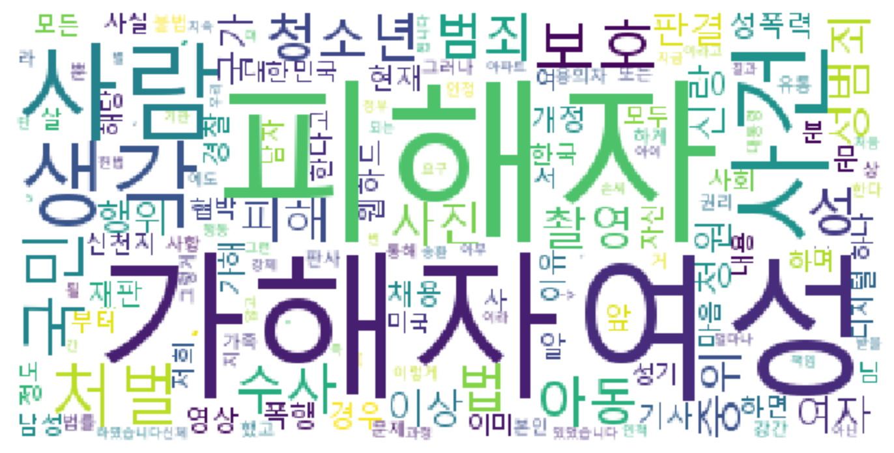
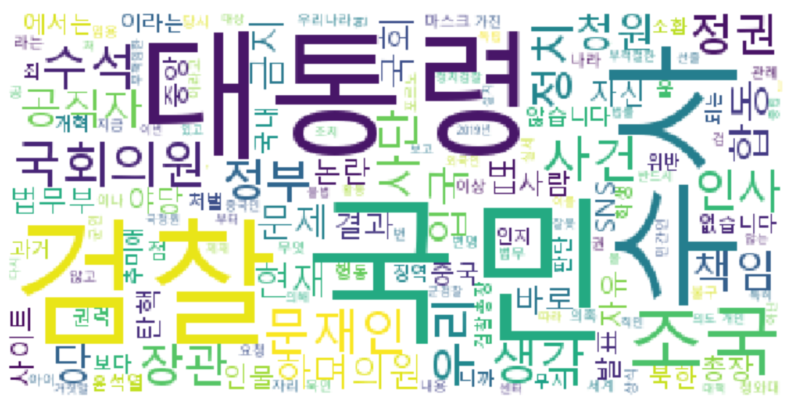

청와대 청원 분석


청와대 청원 분석
- Intro to DS
청와대 청원으로 알아보는 자연어 처리에 대해 학습해보았습니다. Konlpy을 활용해 필요한 모듈들을 학습하고, 기계학습(지도학습)의 맛도 함께 보았죠🌝 더불어 한글을 토큰화하고, 불용어 제거하고, WordCloud에 시각화하는 법까지 학습했답니다👍🥰 청와대 청원의 답변된 청원 모두를 웹에서 크롤링해오고, 이를 데이터 프레임에 담아 EDA도 진행하고! 특정 카테고리의 청원 내용을 WordCloud로 해보는 것까지! 첫번째 wordcloud는 청와대 답변된 청원의 인권/성평등 카테고리 청원 내용을 시각화한 것, 두번째는 정치개혁 카테고리를 시각화한 것입니다😇